Programa de Campeãs e Campeões na América Latina
rOpenSci
2023-10-18
rOpenSci
rOpenSci
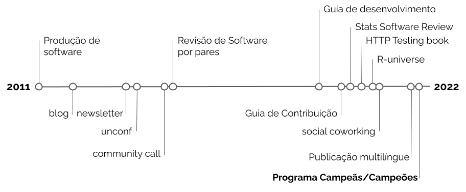Programa Campeãs/Campeões
Marco conceitual
As pessoas campeãs de uma comunidade são aquelas que assumem maior responsabilidade pelo sucesso, pela sustentabilidade e/ou por seu funcionamento.[1]
Objetivo geral
- Identificar, reconhecer e recompensar líderes em uma comunidade.
- Destina-se a pessoas de grupos histórica e sistematicamente excluídos que estejam interessadas em contribuir com a rOpenSci e com as comunidades mais amplas de código aberto e ciência aberta.
Elegiblidade
- pessoas que trabalham com STEAM (ciência, tecnologia, engenharia e matemática)
- de qualquer lugar em qualquer lugar do mundo
- que tenham conhecimento de desenvolvimento com a linguagem R
- possuam habilidades básicas de comunicação em inglês (escrita e verbal)
E que desejem:
- desenvolver um novo pacote, ou
- ter um pacote em R, já desenvolvio, revisado por pares, ou
- se tornar revisoras da rOpenSci
Objetivos específicos para campeãs e campeões
Adquirir habilidades para desenvolver seu próprio pacote R ou;
Adquirir confiança para enviar um pacote R para revisão por pares; ou
Tornar-se um revisor
Aprender a liderar um workshop, evento ou outra atividade da rOpenSci sobre o tópico de desenvolvimento de pacotes ou revisão por pares de software em sua comunidade local
Conectar-se a uma rede dentro do ecossistema R
Fornecer feedback para ajudar a rOpenSci a continuar organizando atividades relevantes e acolhedoras para desenvolvedores de R
Como funciona
Interessados/as/es devem preencher um formulário, geralmente disponibilizado entre julho e outubro
As inscrições são individuais
Não há custo para participar
Duração: 12 meses
Dedicação estimada: de 10 a 16 horas mensais
Bolsa: US$ 1.000 para quem concluir o programa
Atividades desenvolvidas
Treinamentos (6 primeiras semanas) com posterior desenvolvimento de projeto e mentoria, além de encontros trimestrais
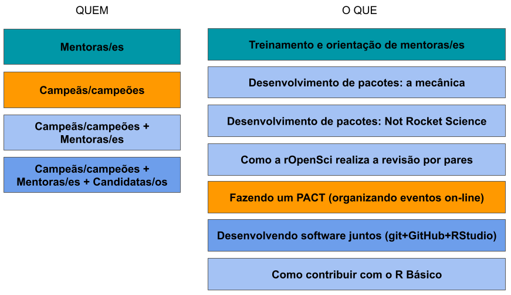1a/2a edições - 2022/2023 e 2023/2024
Candidaturas: 171 campeãs/ões, 56 mentoras/es, 55 países
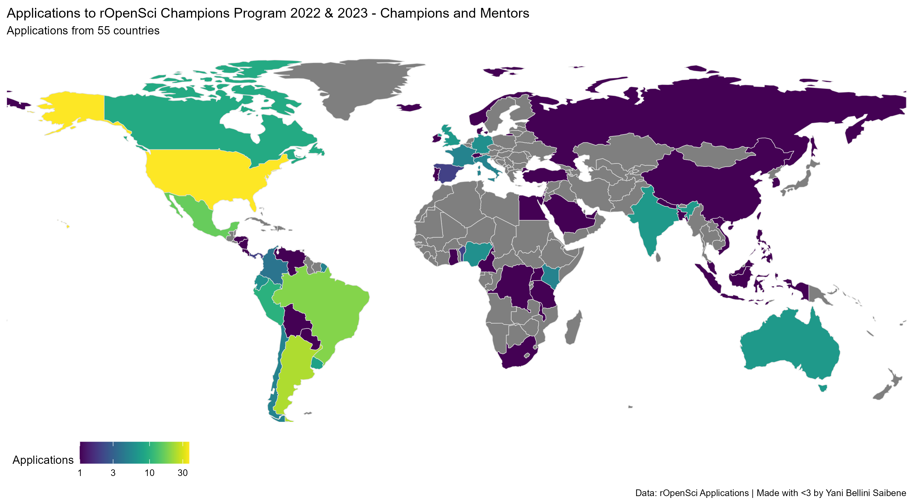América Latina: 3 mentoras/es | 5 campeãs/ões | 3 instrutoras/es/
Mentoras/es latinoamericanas/os
Beatriz Milz 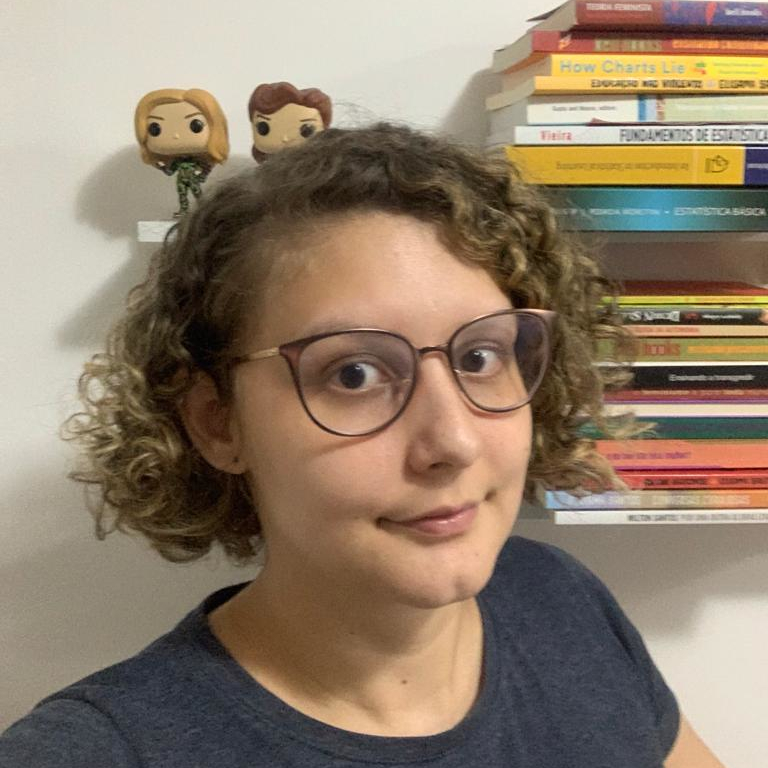
Elio Campitelli
Mauro Lepore
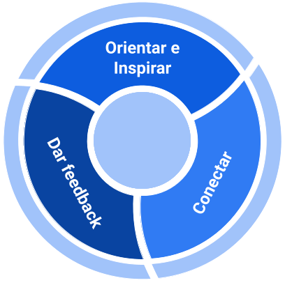
Lições aprendidas
- Ferramentas e espaço para que campeãs/ões e mentoras/es desenvolvam seus projetos de desenvolvimento ou revisão de pacotes com:
- ganho de experiência
- aprimoramento de competências
- orientação de mentores
- apoio de uma comunidade
- aspecto formal com cronograma definido ajuda a manter o o foco na tarefa e a concluí-la em um tempo razoável
Lições aprendidas
- Retorno tangível à comunidade latino-americana de pesquisa e desenvolvimento por diferentes meios, como:
- é necessários que campeãs/ões compartilhem o que aprenderam com a comunidade (blogposts, workshops, etc.)
- aumento do material atualizado em espanhol e português sobre desenvolvimento/revisão de pacotes
- aumento da procura de pessoas pelo programa, em todas suas finalidades
Pacotes desenvolvidos / revisados
Pacotes desenvolvidos / revisados


pacote odbr
Objetivo | Motivação
Objetivo
Disponibilizar dados de pesquisas origem destino brasileira num único lugar, tornando estes dados abertos mais acessíveis e potencializando seu uso.
Motivação
- Minha dissertação de mestrado [2]
- Dados iniciais: 6 coortes de São Paulo (1977, 1987, 1997, 2007 e 2017) e com outra sendo produzida em 2022
- Maximizar o uso dos dados em si e do impacto da minha pesquisa [3]
Primeiros passos
- Há pacotes similares?
- od
- Não é um pacote de dados
- Disponibiliza funções para analisar dados de pesquisas OD
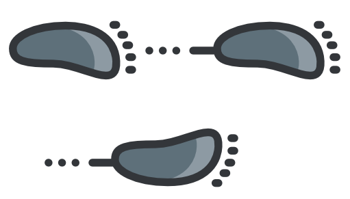
Questões estratégicas
Serão dados de São Paulo ou de todo Brasil?
Serão apenas bases no formato original ou haverá algum tipo de hamonização?
Havendo harmonização, como serão?
Em que língua estãos os dados? Em que língua será feito o pacote?
Principais funções do pacote odbr
- read_od()
- parâmetros: city, year e hamonize (TRUE, FALSE)
- read_dictionary()
- parâmetros: city, year, hamonize e language (pt, en, es)
- read_map()
- parâmetros: city, year, hamonize e geometry (zone, district, municipality)
Funções úteis no pacote odbr
- clean_string()
- remove caracteres não ASCII
- compose_file_path()
- parâmetros: city, year e hamonize (TRUE, FALSE)
- compose_name()
- parâmetros: city, year, hamonize e level (od, dictionary, etc.)
- download_piggyback()
- parâmetros: nome do arquivo a ser baixado
Dificuldades | desafios técnicos | submissão no CRAN
Como lidar com grandes bases de dados
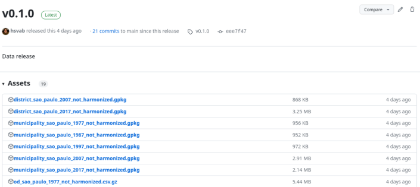
Dificuldades | desafios técnicos | submissão no CRAN
Como limitar / controlar o tempo de execução no CRAN
- da Política do CRAN: “Checking the package should take as little CPU time as possible” (…) “Examples should run for no more than a few seconds each”
- do stackoverflow / issues no Github: tempo de execução não superior a 5s por exemplo
- apendizado com experiência do censobr
- pacotes com download de dados muito dependente de qualidade da conexão
- solução: não executar os exemplos
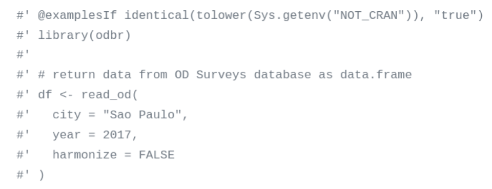
Dificuldades | desafios técnicos | submissão no CRAN
- seguem regras diferentes
- conflitos implicavam não passar pelo RMDcheck no CI
- solução: executar styler antes do linter
Dificuldades | desafios técnicos | submissão no CRAN
Problemas com idioma latino
- palavras acentuadas ou outras fora do dicionário “inglês” (por exemplo, São e Paulo) geraram “notes” na submissão para o CRAN
- tentativa de adoção de uma lista de palavras para “enriquecer o dicionário”
- solução: retirar palavras não reconhecidas
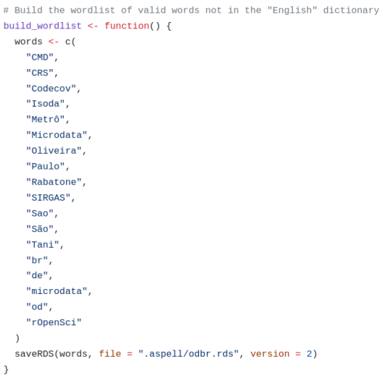
Comunidade
Sem a oportunidade e as pessoas, não seria possível!
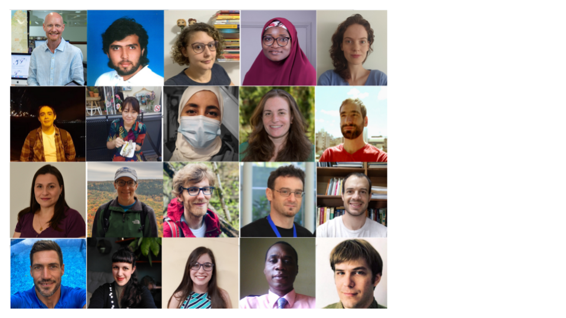Comunidade | Agradecimentos
- Liderança de Yanina Bellini Saibene no programa Champions da rOpenSci com muita paciência,incentivo, prestatividade e acolhimento
- Mentoria de Beatriz Milz pelo programa Champions da rOpenSci (e pela vida!) com muitos encontros hands-on
- Orientação de Rafael Pereira do IPEA com 2 conversas e muitos emails, mensagens e issues
- Apoio de Diego Rabatone que, mesmo um pythoniano, fez várias contribuições de código e ficou com nosso filho no colo muitas vezes
- Logotipo do pacote de Marcos Kyioto entusiasta de transportes públicos e cidades justas que ajudou a dar cor ao código quando precisávamos
- Comunidade RLadies São Paulo
Referências
[3] Repositórios do GitHub: bases de dados, algoritmos, pacote odbr
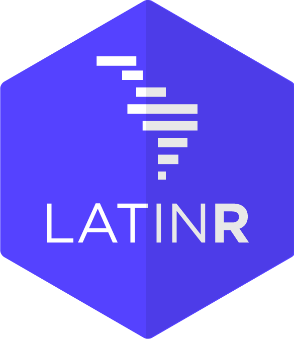Slides by Haydée Svab (@hsvab), made with Quarto. Code available on GitHub.